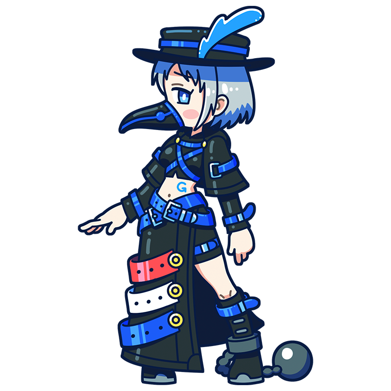

Tradition is something
worth preserving...
But... I...
Gros
Old Ideals or New Visions?
The Classical Messenger
Adrift Upon the Water
One of the disciples of David, the Muse of Neoclassicism. Regarded as the master's most promising successor, this gifted prodigy possesses a shy and sensitive nature, leaving her heart constantly torn between the ideals of Neoclassicism and the rising spirit of Romanticism.
Style
NeoclassicismHometown
Kingdom of France
Classics
- "Bonaparte Visiting the Plague Victims of Jaffa"
- "Bonaparte at the Pont d'Arcole"
- "Sappho at Leucate" etc.
This is the Gros piece!
Bonaparte Visiting the Plague Victims of Jaffa
During the 1799 Siege of Jaffa (in present-day Israel), Napoleon's army was devastated by an outbreak of plague. Rumors spread that Napoleon had ordered terminally ill soldiers to be given fatal doses of opium to eliminate them as a burden. This painting was created as political propaganda to counter those accusations, portraying Napoleon personally visiting and comforting the afflicted soldiers.
Year
1804
Medium
Oil on canvas
Dimension
532 cm x 720 cm
Collection
Louvre Museum
（France)
Who is Gros?
Antoine-Jean Gros
A French painter of the Neoclassical period and one of Jacques-Louis David's most distinguished pupils. Celebrated for his portraits of Napoleon and dramatic historical paintings, he inherited David's studio after his master's exile and became the leading successor to the Neoclassical tradition. In his later years, however, he struggled to reconcile Neoclassicism with the rapidly rising Romantic movement, and ultimately met a tragic end by taking his own life in the Seine River. Though relatively little known in Japan, Gros remains an important figure in the history of French painting.
Full Name
Antoine-Jean Gros
Born
March 16, 1771
Died
June 25, 1835(aged 64)